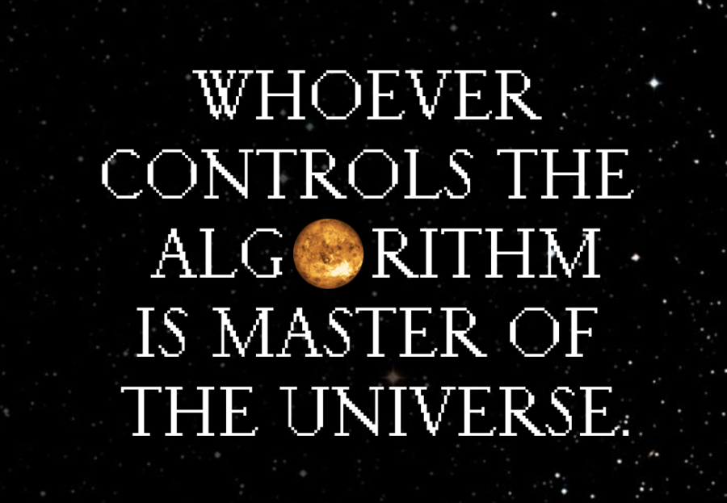

MASTERS PROJECTION
I took an electronics class during my first year in an art, technology, and design program. This was my first time learning how to create what I thought would be a series of elegant and delightful interactions through physical computation and interactivity. I felt inspired for some time but then we got to the unit where we learned about synchronous communication and how to get multiple microcontrollers to communicate with each other.
There in that classroom, I sat as the only black student, as our professor introduced to us the terminology of Master and Slave in our protocol.
It was a reminder that we have not escaped the Master and Slave dynamics and in fact it has become embedded into our hardware in addition to the code of our computers.
What software was made with black people in mind?
What software was made with black people in mind?
What software was made with black people in mind?
What software was made with black people in mind?
What software was made with black people in mind?
What software was made with black people in mind?
What software was made with black people in mind?
What software was made with black people in mind?
What software was made with black people in mind?
Encode: Converting data from one form to another / to cipher / encrypt
Decode: Convert encoded message into intelligible communication / decipher / to discover underlying meaning
Anti-blackness is both encoded and decoded into the technology. Thinking about the earlier data bending exploration, this looks like code being removed to the point of blackness becoming abstracted, removed from its source, and consumable by all. Abstracted Blackness is now the currency of the web, but a currency that is null if you're actually Black.
It looks like black people being included/uploaded as numbers and datapoints which are then used as tools for dehumanization, surveillance, and murder.

What does it mean to be uploaded?
If reality is based on our projections, to be uploaded invites the opportunity for new realities based on new projections. Continuous projections and Continuous Disembodied projections.
But as the Master and Slave narrative is embedded in the hardware, software, and AFK reality, whose projections rise to the surface of the screen and our being?
The Master's Projections. The Master's Gaze.
ONE-WORLD WORLD
The technologies of capitalism and colonialism and the many start-ups birthed under them rely on the maintenance of the “one-world world,” a term coined by John Law, Professor of Sociology and Technology studies at The Open University.
The “one-world world” is a world that “privileges itself and negates the presence of other worlds.” 2
This one-world world is the Master's World and the Master's Projection complete with its own algorithm, a set of rules, relations, and ideologies, that compose all the things that many come to know as ULTIMATE TRUTH and REALITY.
These sets of rules, relations, and ideologies also compose what, in my magical community, we call CONSENSUS REALITY or the collection of beliefs generally regarded as true. This algorithm is what communicates to us what is and is not possible and through this functions by negating other worlds and other realities.
The algorithm, with anti-blackness embedied in its core, dictates that Black Lives DO NOT matter, which is why we must do the magical work of manifesting and proclaiming that Black Lives DO Indeeed Matter.
But many of us know that the Master's reality is not the only reality, because many of us simultaneously live in other worlds as well and many of us are doing the necessary work of creating new-worlds every day. Many of us want more and we can, in fact, have more. Our other worlds provide more ways of being, more opportunities to exist, more collaborations, and more forms of knowledges to support us in this world traveling we embark on.
Legacy Russell in Glitch Feminism Manifesto reminds us of something that glitch has to offer: a refusal.
“We are building a future where we can have the broad range we deserve. We refuse to shrink ourselves, refuse to fit. Fluid, insistent, we refuse to stand still: we slip, we slide. We recognize the contributions of blackness toward liberatory queerness, and the contributions of queerness toward liberatory blackness. We fail to function for a machine not built for us. We refuse the rhetoric of “inclusion” and will not wait for this world to love us, to understand us, to make space for us. We will take up space, and break this world, making new ones.” 3
There is fluidity in refusal. Initially, when working on this project in early 2020, I was stressed by this idea that I had to "fix" this world, a world that is undeniable anti-black, cold, and unforgiving. How do you fix the anti-blackness, transphobia, ableism, etc that is embedded in the hardware and software of most of our systems, government, technology, and within ourselves? But the glitch has shown me that there are possibilities available to us all and new worlds and collaborations that I have not even dreamed of. Glitch creates space. In the break of the glitch, there is room to append our own code, transforming both the world and ourselves into beautiful chaotic realms where we no longer shrink but expand, moving toward liberatory queerness and liberatory blackness.